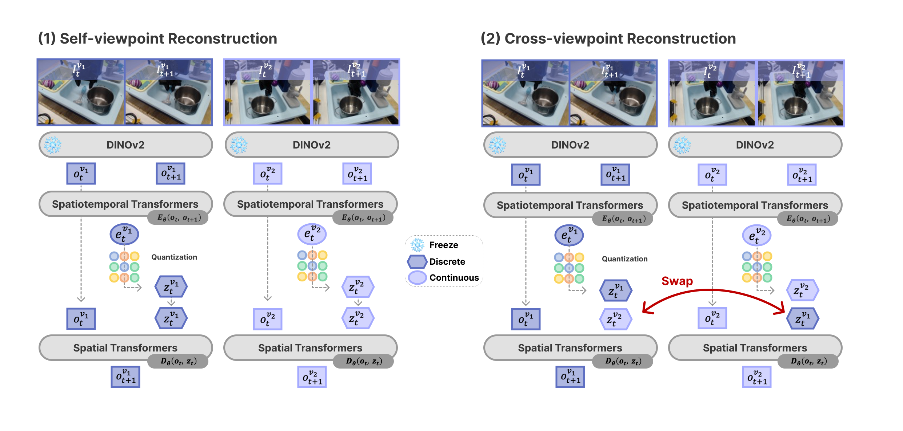
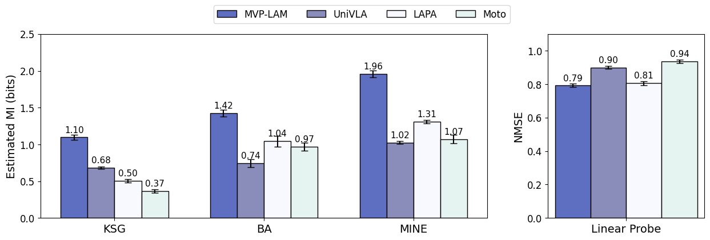
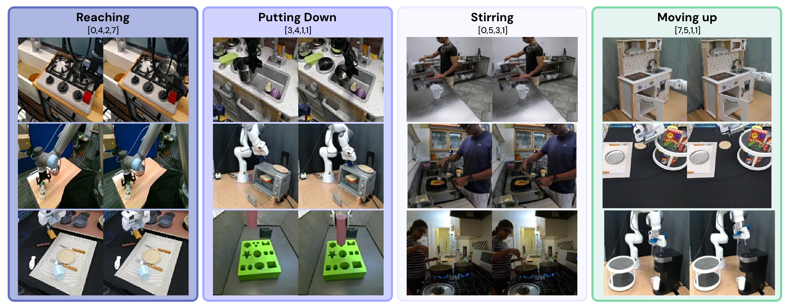

Success rate and grasping rate in percent. Best is bolded and second best is underlined.



Learning latent actions from diverse human videos enables scaling robot learning beyond embodiment-specific robot datasets, and these latent actions have been used as pseudo-action labels for VLA model pretraining. To make VLA pretraining effective, latent actions should contain information about the underlying agent actions despite missing ground-truth labels. We propose Multi-ViewPoint Latent Action Model (MVP-LAM), which learns discrete latent actions from time-synchronized multi-view videos. MVP-LAM trains latent actions with a cross-viewpoint reconstruction objective so that a latent action inferred from one view must explain the future in another view, reducing reliance on viewpoint-specific cues. On Bridge V2, MVP-LAM improves action-centricity, achieving higher mutual information with ground-truth actions and improved action prediction, including under out-of-distribution evaluation. Pretraining VLAs with MVP-LAM latent actions improves downstream manipulation performance on SIMPLER and LIBERO-Long.
MVP-LAM leverages time-synchronized multi-view videos and cross-viewpoint reconstruction to learn action-centric latent actions. It optimizes two complementary terms. Self-viewpoint reconstruction predicts $o_{t+1}^{v}$ from $(o_t^{v}, z_t^{v})$. Cross-viewpoint reconstruction swaps latent actions across synchronized views and predicts $o_{t+1}^{v}$ from $(o_t^{v}, z_t^{\\tilde v})$ for $v \\neq \\tilde v$.
We measure action-centricity with mutual information between latent actions and ground-truth actions and with a linear probe that predicts actions from latent actions, reporting NMSE. MVP-LAM achieves the highest estimated $\\mathcal{I}(Z;A)$ across estimators and the lowest NMSE on Bridge V2.
Pretraining with MVP-LAM latent actions improves downstream manipulation. The average success rate increases from 39.6 percent to 60.4 percent on SIMPLER. On LIBERO-Long, MVP-LAM reaches 90.8 percent success, improving over UniVLA pretrained on Bridge V2 at 79.4 percent.
Success rate and grasping rate in percent. Best is bolded and second best is underlined.
| Success Rate | MVP-LAM | UniVLA | LAPA | OpenVLA | Octo-Small | Octo-Base | $\\pi_0$ |
|---|---|---|---|---|---|---|---|
| StackG2Y | 33.3 | 16.7 | 54.2 | 41.6 | 8.3 | 0.0 | 37.5 |
| Carrot2Plate | 66.7 | 20.8 | 45.8 | 50.0 | 33.3 | 37.5 | 33.3 |
| Spoon2Towel | 66.7 | 54.2 | 70.8 | 37.5 | 25.0 | 12.5 | 29.2 |
| Eggplant2Bask | 75.0 | 66.7 | 58.3 | 16.7 | 12.5 | 20.8 | 45.8 |
| AVG | 60.4 | 39.6 | 57.3 | 36.4 | 19.8 | 17.7 | 36.5 |
| Grasping Rate | MVP-LAM | UniVLA | LAPA | OpenVLA | Octo-Small | Octo-Base | $\\pi_0$ |
|---|---|---|---|---|---|---|---|
| StackG2Y | 54.3 | 45.8 | 62.5 | 50.0 | 54.2 | 70.8 | 58.3 |
| Carrot2Plate | 70.8 | 37.5 | 58.3 | 66.6 | 75.0 | 54.2 | 58.3 |
| Spoon2Towel | 79.2 | 79.2 | 83.3 | 45.8 | 66.7 | 70.8 | 54.2 |
| Eggplant2Bask | 95.8 | 100.0 | 83.3 | 37.5 | 50.0 | 54.2 | 87.5 |
| AVG | 75.0 | 65.6 | 71.9 | 50.0 | 61.5 | 62.5 | 64.6 |
| MVP-LAM | UniVLA (Bridge) | OpenVLA | $\\pi_0$ | UniVLA (OXE) |
|---|---|---|---|---|
| 90.8 | 79.4 | 53.7 | 85.2 | 92.0 |
We show example discrete codes selected for representative frame transitions. Similar motion patterns tend to activate similar codes across sources.
@misc{lee2026mvplamlearningactioncentriclatent,
title = {MVP-LAM: Learning Action-Centric Latent Action via Cross-Viewpoint Reconstruction},
author = {Jung Min Lee and Dohyeok Lee and Seokhun Ju and Taehyun Cho and Jin Woo Koo and Li Zhao and Sangwoo Hong and Jungwoo Lee},
year = {2026},
eprint = {2602.03668},
archivePrefix = {arXiv},
primaryClass = {cs.RO},
url = {https://arxiv.org/abs/2602.03668}
}